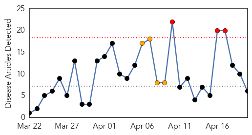
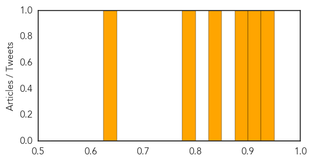
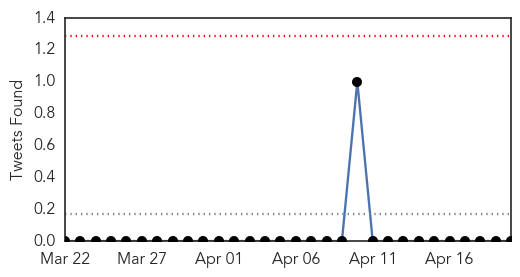
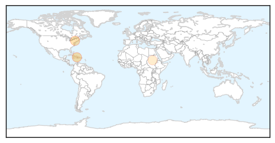
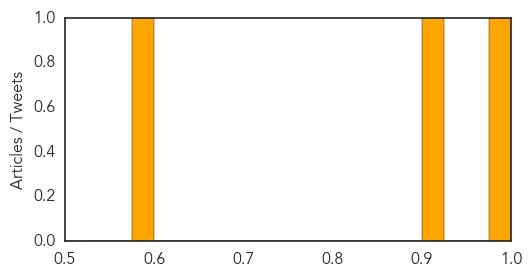

Measles
30-Day Web Trend
3 alerts, 4 warnings

30-Day Twitter Trend
0 alerts, 0 warnings

Article Locations

Article Confidences
Top Articles:
- 0.944
- Second measles case confirmed in Edmonton
- 0.901
- Passengers on Vancouver-to-Edmonton flight warned to watch for measles
- 0.893
- The Kid’s Doctor: Measles outbreak points to importance of vaccines
- 0.842
- Central hospitals see fewer new measles patients
- 0.788
- Air Canada flight from Vancouver carried child with measles
- 0.632
- Don't let parents opt out of 'mandatory' vaccinations
Top Tweets:
-
No tweets found for Apr 20, 2014
Cholera
30-Day Web Trend
0 alerts, 0 warnings

30-Day Twitter Trend
0 alerts, 0 warnings

Article Locations
Article Confidences
Top Articles:
Top Tweets:
-
No tweets found for Apr 20, 2014